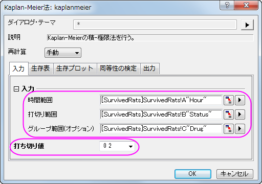
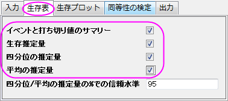
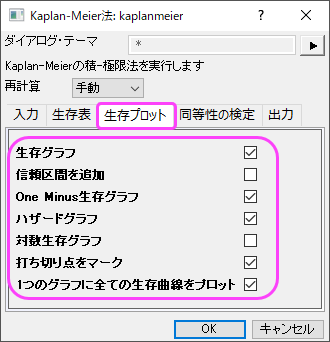
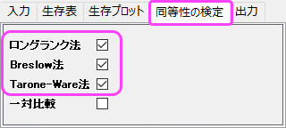
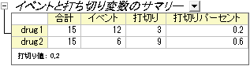
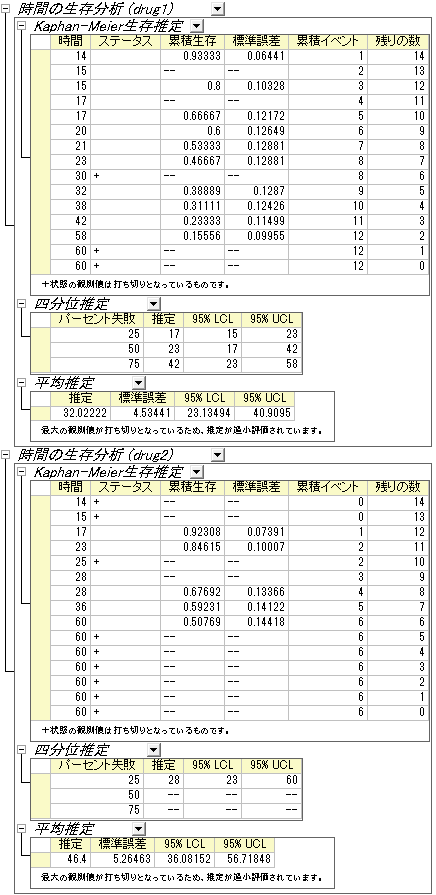
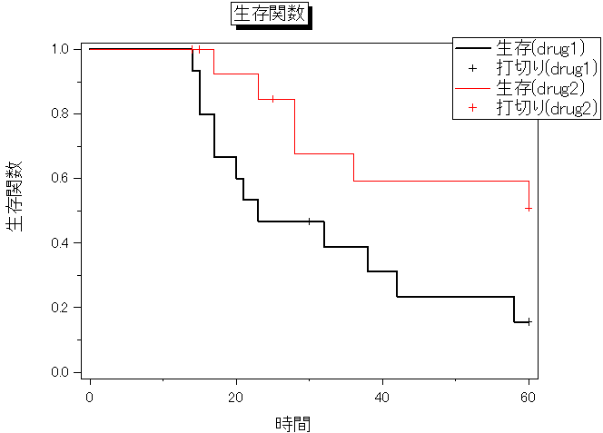
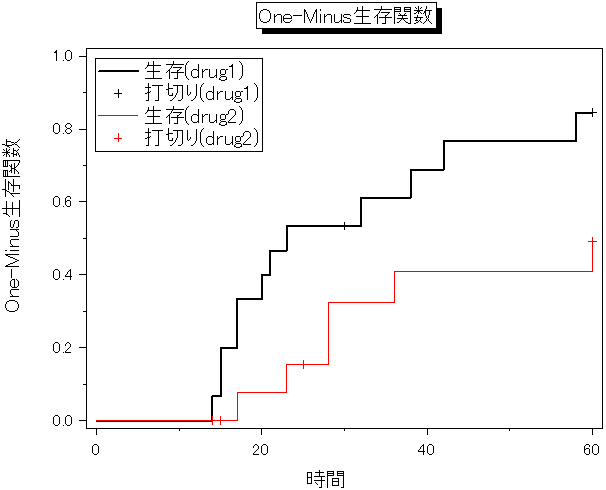
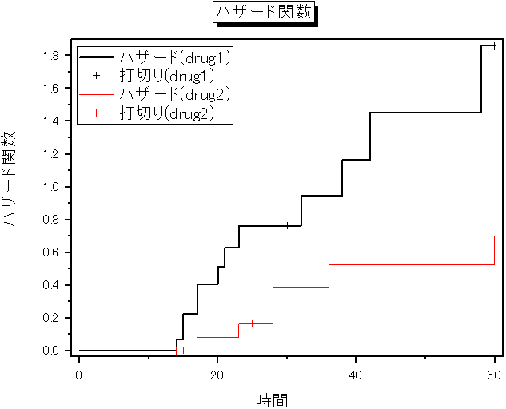
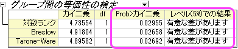

Kaplan-Meier法
Kaplan-Meier-Estimator
概要
生存分析は、死亡や治療の失敗などのイベントに至るまでの時間を分析するものです。また、社会科学ではイベント履歴分析、エンジニアリングでは信頼性解析も呼ばれています。
生存関数 S(t) は、時間 t までの生存率を表します。らに、S(t)=1-F(t)、ここでF(t)は、故障時間の累積分布関数です。一方、ハザード関数h(t)（故障率、ハザード率、または死亡率とも呼ばれる）は、F(t)の確率密度関数P(t)と生存関数S(t)の比です。
カプランマイヤー法または積極限推定法は、徐々に打ち切られる故障時間の標本データからS(t)の推定値を提供します。
学習する項目
このチュートリアルでは、以下の項目について解説します。
ステップ
Kaplan-Meier法の実行
科学者は、がん抵抗性のためのより良い薬を探しています。一部のラットを発がん性物質DMBAに曝露した後、ラットのグループごとに異なる薬を適用し、最初の60時間の生存状況を記録します。最初のグループでは、暴露後生存した15匹のラットにdrug1が投与されました。30時間経過後に1匹のラットが死亡しますが、癌腫によるものではありませんでした。2番目のグループでは、15匹のラットが生存し、drug 2が投与された。14時間後、15時間後、25時間後に、1匹のラットが死亡しますが、癌腫によるものではありません。2群のラットの記録は、/Samples/Statistics/SurvivedRats.datファイルに保存されています。Status列の値は、0 = 癌が原因でない死亡、1 = 癌による死亡、2 = 生存、を示しています。
- 新しいワークブックを用意します。ヘルプ: フォルダを開く: サンプルフォルダを選択して、サンプルフォルダを開きます。このフォルダ内のStatisticsサブフォルダにあるSurvivedRats.dat ファイルを探します。空のワークシートにファイルをドラッグアンドドロップしてインポートします。
- Kaplan-Meier法の機能を使って、データセットを分析します。メニューの統計: 生存分析: Kaplan-Meier法を選択してダイアログを開きます。
- 列A, B, Cをそれぞれ入力ブランチ内の時間範囲, 打切り範囲, グループ範囲 にセットします。
- 打ち切り値として、0と2を設定します。
- 
- 生存表グループでは、イベントと打ち切り値のサマリー、生存推定量、四分位の推定量、平均の推定量のチェックを付けます。
- 
- 生存プロットタブでは、One Minus生存グラフ、ハザードグラフのチェックを付けます。
- 
- 同等性の検定タブでは、ログランク法、Breslow法の、Tarone-Ware法にチェックを付けます。
- 
- OKボタンをクリックします。
結果の解釈
分析レポートのワークシートKaplanMeier1を開きます。
- 「イベントと打ち切り変数のサマリー」表から、drug 1グループは打切り=3および打切りパーセント = 0.2、drug 2グループでは、打切り=9および打切りパーセント = 0.6であることがわかります。
- 
- 「Kaplan-Meier生存推定」表では、イベントまでの時間変数の分布を調べるための説明的な処理が表示されます。因子変数のレベルによって分布を比較することもできます。四分位推定と平均推定表では、四分位数と平均の推定値と信頼区間を提供します。
- 
- 生存曲線では生命表を視覚的にとらえる事ができます。生存関数のKaplan-Meier推定を元にしたプロットは、水平なステップの繰り返しで徐々に大きさが少なっていくものです。プロット内でより生存曲線の減少が急なものほど生存確率は小さくなります。生存関数プロットはdrug1とdrug2のグループで、1時間ごとにどれぐらい割合の個体が生存していたかを示しています。drug1のグループの減少率の方が急なので、drug2の方が抗ガン剤としてよいといえます。
- 
- 1つマイナス生存関数を形成すると、生存関数プロットと同じ結論を得ることができます。
- 
- ハザード率は、任意の時点で発生する特定のイベントの瞬間確率です。X軸の時間に対してプロットし、時間に対するハザード率のグラフを作成できます。そして、ハザード関数は、このプロットされた線を説明する方程式です。グラフから、drug1グループのハザード率がdrug 2グループよりも大きいことがわかります。したがって、drug 2の方が癌抵抗性を改善するための優れていると結論付けることができます。
- 
- グループ全体の生存時間の同等性の全体的な検定のために、Originは3つの方法を提供します。
- ログランク法: すべての時点を同じように重み付けすることにより、生存関数の同等性を検定します。
- Breslow法: 各時点におけるリスクのある症例数ですべての時点を重み付けすることにより、生存関数の同等性を検定します。
- Tarone-Ware法: 各時点におけるリスクのある症例数の平方根ですべての時点を重み付けすることにより、生存関数の同等性を検定します。
- 
- 検定の有意値はすべて0.05より小さいため、2つの治療法（drug1とdrug2）の生存時間には統計的に有意な差があるといえます。